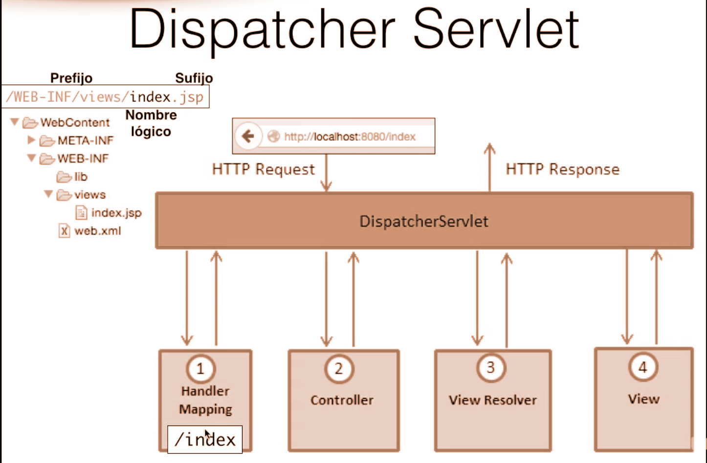
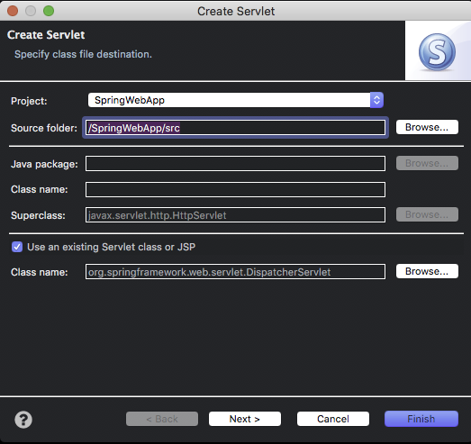
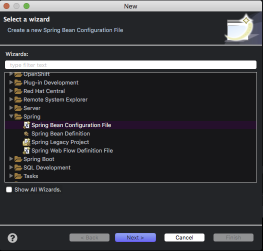
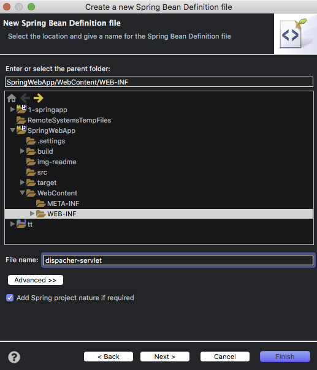
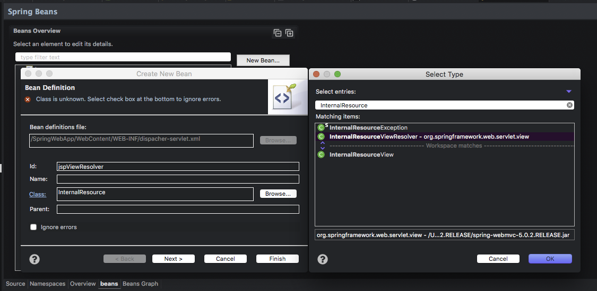
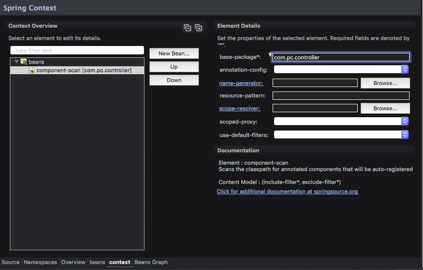

export PATH=/Users/pc/Documents/PROYECTOS-PAUL/CODIGO/JAVA/MAVEN/apache-maven-3.5.2/bin:$PATH
Archivo: ./pom.xml, seccion de dependecies
<dependencies>
<dependency>
<groupId>org.springframework</groupId>
<artifactId>spring-core</artifactId>
<version>5.0.2.RELEASE</version>
</dependency>
<dependency>
<groupId>org.springframework</groupId>
<artifactId>spring-beans</artifactId>
<version>5.0.2.RELEASE</version>
</dependency>
<dependency>
<groupId>org.springframework</groupId>
<artifactId>spring-context</artifactId>
<version>5.0.2.RELEASE</version>
</dependency>
<dependency>
<groupId>org.springframework</groupId>
<artifactId>spring-web</artifactId>
<version>5.0.2.RELEASE</version>
</dependency>
<dependency>
<groupId>org.springframework</groupId>
<artifactId>spring-webmvc</artifactId>
<version>5.0.2.RELEASE</version>
</dependency>
<dependency>
<groupId>org.springframework</groupId>
<artifactId>spring-aop</artifactId>
<version>5.0.2.RELEASE</version>
</dependency>
<dependency>
<groupId>org.springframework</groupId>
<artifactId>spring-expression</artifactId>
<version>5.0.2.RELEASE</version>
</dependency>
<dependency>
<groupId>javax.servlet</groupId>
<artifactId>servlet-api</artifactId>
<version>2.5</version>
</dependency>
</dependencies>
En el caso de que exista el error:
the superclass "javax.servlet.http.HttpServlet" was not found on the Java Build Path
Debemos importar la libreria de javax.servlet.
Es la piedra angular, la cual maneja las peticiones http. 
Use an exist servlet class or JSP y seleccionar la opcion dispacher de org.springSi aparece el error
Cannot add existing servlet in Eclipseasegurate que las dependencias declaradas en maven se hayan descargado o reinicia el IDE. 
dispacher y fijar en url mapping la ruta / 
El codigo que se genera a travez de esta configuracion es la siguiente
Archivo: /WebContent/WEB-INF/web.xml
<servlet>
<description></description>
<display-name>dispacher</display-name>
<servlet-name>dispacher</servlet-name>
<servlet-class>org.springframework.web.servlet.DispatcherServlet</servlet-class>
</servlet>
<servlet-mapping>
<servlet-name>dispacher</servlet-name>
<url-pattern>/</url-pattern>
</servlet-mapping>
Click derecho carpeta ./Webcontent/WEB-INF> New > Others > seleccionar en la ventana Spring Bean Configuration File> Next 
Colocar en el file name el mismo nombre que usamos en la creacion del dispacher mas el sufijo -servlet 
Archivo: /WebContent/WEB-INF/dispacher-servlet.xml
<?xml version="1.0" encoding="UTF-8"?>
<beans xmlns="http://www.springframework.org/schema/beans"
xmlns:xsi="http://www.w3.org/2001/XMLSchema-instance"
xsi:schemaLocation="http://www.springframework.org/schema/beans http://www.springframework.org/schema/beans/spring-beans.xsd">
</beans>
./WebContent/WEB-INF/dispacher-servlet.xml> Click en la pestania Beans> New Bean > Colocar en id jspViewResolver y en class InternalResource> click en browse y seleccionar InternalResourceViewResolver> next  WEB-INF/views/ y prefix:.jsp Archivo: /WebContent/WEB-INF/dispacher-servlet.xml
<bean id="jspViewResolver" class="org.springframework.web.servlet.view.InternalResourceViewResolver">
<property name="prefix" value="WEB-INF/views/"></property>
<property name="suffix" value=".jsp "></property>
</bean>
./WebContent/WEB-INF/dispacher-servlet.xml> Click en la pestania Nemespaces> dar click en context 
componen-scan y en base-package apuntar al paquete donde se localizaran los controladores  Archivo: /WebContent/WEB-INF/dispacher-servlet.xml
<context:component-scan base-package="com.pc.controller"></context:component-scan>
// Metodo para enlazar con la vista
@RequestMapping("/")
public String showIndex() {
return "index";
}
Libreria para introducir codigo java en las vistas
<dependency>
<groupId>jstl</groupId>
<artifactId>jstl</artifactId>
<version>1.2</version>
</dependency>
<%@ taglib prefix = "c" uri = "http://java.sun.com/jsp/jstl/core" %>